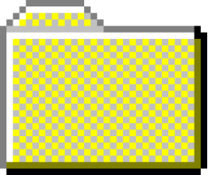
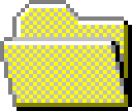

Prática de guardar, organizar, selecionar, trocar e expor diversos itens
por categoria, em função dos seus interesses pessoais.
Trailer
As Coleções

Alice Oliveira
Aníbal Simão
Vitor Coutinho

Alice Oliveira
-É uma fã, ou uma adepta?
-Sou benfiquista.
A Sr. Alice não gosta de falar de outro clube que não o seu. Tem 87 anos
e já não corre há muito tempo, mas, em relação ao Benfica, continua a
dizer que "quem corre por gosto, não cansa".
Num jogo, não faltam os rissóis e o cachecol que vai oferecer ao senhor
do banco; em casa, não faltam "benfiquices".
Aníbal Simão
O Sr. Aníbal Simão é barbeiro em Oliveira de Azeméis. A sua barbearia já
tem o armazenamento cheio. As paredes são brancas, mas estão decoradas
com objetos de coleção do Elvis Presley que Aníbal foi colecionando ao
longo dos anos.
Vitor Coutinho
O Sr. Vitor tem uma ourivesaria em Viana do Casto que toca música dos
Beatles desde que abre até à hora que fecha.
Mas é em casa que tem o seu armazenamento cheio: uma sala cheia de
materiais de coleção dos Beatles, e não só. Porque o bichinho do
colecionismo não o deixa em paz
Conclusão
Quizz das Coleções
Sobre Nós
O WEBDOCUMENTÁRIO
Tens o armazenamento cheio? Estas pessoas também, e não estão
interessadas em libertar espaço.
Neste web documentário, três colecionadores abrem as portas das suas
casas, barbearias e ourivesarias, para mostras museus privados.
Entramos, sem pagar bilhete, nestes "armazenamentos cheios" para
conversar sobre o colecionismo
O Armazenamento Cheio é um projeto da Unidade Curricular de Atelier
Multimédia, do segundo ano da licenciatura em Ciências da Comunicação:
Jornalismo, Assessora e Multimédia, da Universidade do Porto